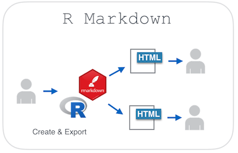
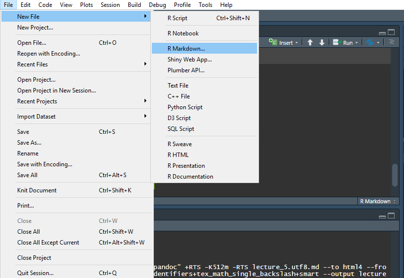
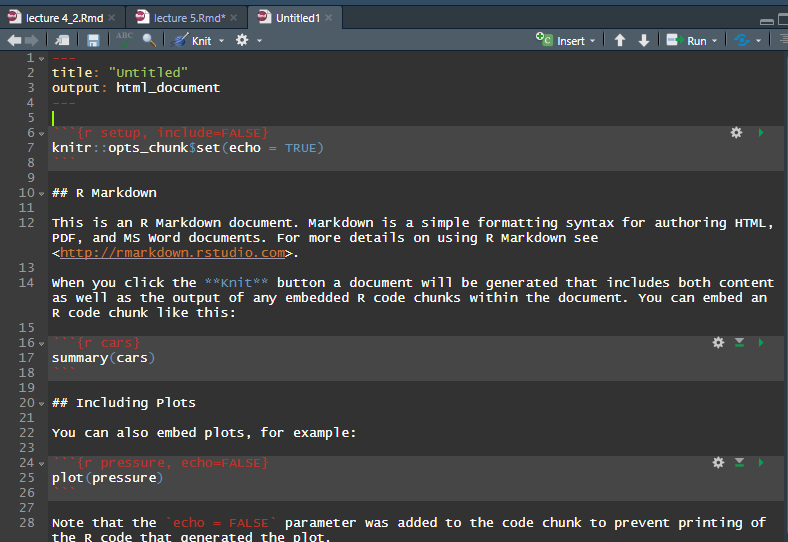

install.packages("rmarkdown")
library(rmarkdown)3 Xây dựng báo cáo với Rmarkdown
3.1 Giới thiệu
Khi xây dựng các project phân tích dữ liêu, việc ghi chép lại quá trình và các bước phân tích đóng một vai trò rất quan trọng. Với R, ta có thể sử dụng rmarkdown để thực hiện các công việc sau:
- Xây dựng báo cáo, giúp cho người ra quyết địnnắm được
insightsvà ra quyết định - Ghi chép lại toàn bộ quá trình phân tích chi tiết
rmarkdown cho phép ta làm được các công việc sau:
- Cho phép viết toàn bộ phân tích trong 1 báo cáo
- Cho phép chèn code, vẽ biểu đồ, hiển thị đính kèm báo cáo
- Cho phép comment các kết quả phân tích
- Hỗ trợ các biểu đồ/ bảng động trong phân tích
- Cho phép tái phân tích toàn bộ dữ liệu nhanh chóng

3.2 Sử dụng Rmarkdown
3.2.1 Tạo file mới
Để có thể xây dựng báo cáo, ta cần cài đặt package rmarkdown như sau
Tạo file markdown mới
File >> New file >> rmarkdown >> OK

File rmarkdown mới tạo có định dạng như sau

3.2.2 Các thành phần cơ bản của 1 file markdown
3.2.2.1 Header
Phần header (hay metadata) của file markdown được ghi sau hai dấu --- như sau.
---
title: "Untitled"
output: html_document
---Trong thực tế, khi xây dựng báo cáo, ta có thể khai báo metadata trong phần header như sau.
---
title: "Nội dung phân tích"
output:
html_document:
highlight: haddock
number_sections: yes
theme: readable
toc: yes
toc_float: true
code_folding: hide
---Ý nghĩa các tham số như sau:
highlight: Theme màu của code trong filermarkdownnumber_sections: Đánh số tự động các phần headingtheme: Theme của cả filermarkdowntoc: Hiển thị mục lục,yeshoặcnotoc_float: Chế độ cho phép mục lục treo ở phần bên trái,truehoặcfalsecode_folding: Chế độ cho phép ẩn hoặc hiện code trong báo cáo
3.2.2.2 Text trong markdown
markdown cho phép người dùng tập trung vào content. Do đó, cấu trúc viết text trên markdown sẽ ưu tiên vào sự đơn giản. Cấu trúc của markdown như sau.
# Heading 1
## Heading 2
Nội dung phân tíchCác cú pháp hay dùng trong markdown:
| Nội dung | Cú pháp |
|---|---|
| Tiêu đề 1 | # Tiêu đề 1 |
| Tiêu đề 2 | ## Tiêu đề 2 |
| Tiêu đề 3 | ### Tiêu đề 3 |
| In đậm | **In đậm** |
| In nghiêng | *In nghiêng* |
| Công thức toán | $$E = mc^2$$ |
| Gạch đầu dòng | - |
Các cấu trúc khác, xem thêm tại Rmarkdown cheatsheet
3.2.2.3 R code
Trong file rmarkdown, ta có thể chèn các câu lệnh với R. Một đoạn code chứa trong rmarkdown được gọi là code chuink,
- Cách chèn R code trong Rmarkdown:
Ctrl + Shift + I - Cấu trúc R code chunk
```{r, r code options}
mtcars %>% summaryCác options thường dùng:
| Options | Ý nghĩa |
|---|---|
eval = F |
Không chạy code, chỉ hiển thị code |
eho = F |
Chạy code, không hiển thị code |
warning = F |
Không hiển thị cảnh báo |
message = F |
Không hiển thị thông báo |
fig.height = 8 |
Để biểu đồ cao 8 inches |
fig.width = 6 |
Để biểu đồ cao 6 inches |
3.2.2.4 Thực hiện báo cáo
- Cách 1: Click vào
Knit - Cách 2:
Ctrl + Shift + K